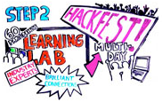
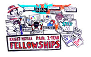

The Knight-Mozilla News Technology Partnership is a three-year partnership between the Knight Foundation and Mozilla to harness open-web innovation for journalism.
Through a series of innovation challenges and community events, we will identity 15 fellows that will be embedded in leading newsrooms around the world. These fellows will create new tools, ideas, and news experiences that benefit both readers and newsmakers—all using open technologies.
What are we doing?
- Generating great ideas: through innovation challenges, open conversations and fellowships.
- Training people: on taking ideas from concept to code.
- Making software: demos and reference implementations of the best ideas and experiments for news. All built using open web technologies.
- Thought leadership: through fellows, community & news partnerships.
Journalism and the open web are built on common values. And, like the web, the future of journalism lies in universal access and participation.
News should be universally accessible across phones, tablets, and computers. It should be multilingual. It should be rich with audio, video, and elegant data visualization. It should enlighten, inform, and entertain people, and it should make them part of the story.
For the next three years, we'll imagine and build stuff to advance the state of the art in web-based journalism. All of that work will be open source, and available for others to use and build upon.

Design callenges
Bring in new ideas to the community. This needs to be two lines long.
Read More
In 2011 and 2012, Knight and Mozilla will pose a series of news technology challenges for designers, developers and "news hackers" around the world. We'll kick off in Spring 2011 with:
Entrants can participate in a variety of ways—from a written brief or blog post to videos, slidecasts, early demos or visual mock-ups—whatever it takes to get your idea across. We'll take votes on the proposals, and they'll be considered by a reviewer panel that includes news tech gurus and industry leaders.
What are we looking for? Ideas and software that:
- Are highly innovative and have potential for broad adoption in the news community.
- Produce re-usable, open-source technology that benefits the Web as a whole.
- Are useful to real-world media organizations, or born out of long-established newsroom experience.

Challenge winners become fellows
They develop software that showcases open web tech in news.
Read More
60 of the best design challenge participants will be invited to take part in the Knight-Mozilla Learning Lab.
Together participants will further refine, combine, and develop their ideas from the challenge. We'll then gather the strongest participants and ideas for high-energy hackfests that begin building working prototypes.

Thought leadership
Bringing together fellows, the community and news partners for a symposium.
Read More
The most promising participants will be embedded as Knight-Mozilla Fellows in newsrooms to directly apply what they've learned and built.
Knight-Mozilla Fellowships are paid, one-year positions inside newsrooms at Al Jazeera English, the BBC, Boston.com, the Guardian, Zeit Online or other leading news organizations. We'll place 5 fellows in 2011, and 10 more in 2012.
About Knight
The John S. and James L. Knight Foundation advances journalism in the digital age and invests in the vitality of communities where the Knight brothers owned newspapers.
Knight Foundation focuses on projects that promote informed and engaged communities and lead to transformational change.
For more, visit www.knightfoundation.org
About Mozilla
Mozilla is a global non-profit dedicated to putting you in control of your online experience and shaping the future of the web for the public good.
We do this by creating great software, like the Firefox browser, and building communities, like Mozilla Drumbeat, that empower people to take control of their online lives.
For more visit www.mozilla.org